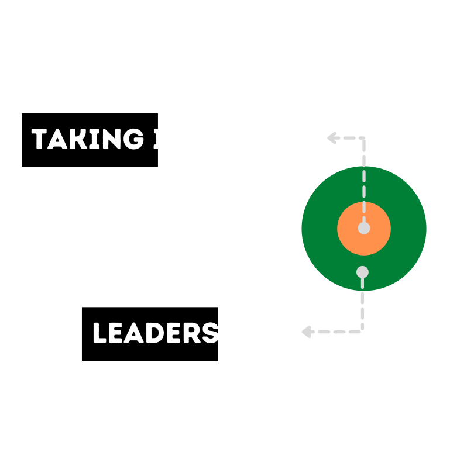

Taking Initiative
What is meant by Taking Initiative?
Taking an action to fulfill a need without being asked by anybody.
Taking Initiative is the heart of Leadership.

What is the difference between a Leader and Others?
A Leader decides what to do while others decide how to do it.
The Person who takes the initiative is a Leader and the immediate follower can also be considered as a Leader. Because leader takes the initiative and shows others what to do and then others come and think about how to do it.
Watch the below video to understand what Taking Initiative is and the difference betweren a leader and others.
Now, you have enough knowledge on what the taking initiative is all about. What next?
How to take an initiative and what are the things we need to concentrate on, to take an initiative?
These may be some questions revolving in your head right now. Worry not! we are going to discuss them briefly.
What do we need, to take Initiative?
Research says below three are the most important things we need to follow while taking an initiative.
- Have an open-mind
- Take calculated risks
- Don't fear failure
How to be Open-Minded?
Open-mindedness involves being receptive to a wide variety of ideas, arguments, and information. Being open-minded is generally considered a positive quality. It is a necessary ability in order to think critically and rationally.
If you are not open to other ideas and perspectives, it is difficult to see all of the factors that contribute to problems or come up with effective solutions. In an increasingly polarized world, being able to step outside your comfort zone and consider other perspectives and ideas is important.
Six key ways to be Open-Minded:
- Fight the urge to react in anger when you hear differing opinions.
- Avoid closing yourself off.
- Place yourself out of your comfort zone.
- Stay social and make new friends.
- Don’t be afraid to ask questions.
- Avoid speculation.
How to take Calculated Risks?
Risks taken considering the following five rules are termed as Calculated Risks.
- Be Truthful
- Be Realistic
- Be as Unemotional as possible
- Mitigate risks whenever possible
- Ask yourself whether you have to make that decision today itself ?
Watch the below video to know the importance of taking risks in this dynamically changing world from the words of Mark Zuckerberg.
How to overcome Fear of Failure?
There are three things you can follow to overcome fear of failure.
- Reframe your goals
- Visualise obstacles and make plans to overcome them.
- Uncover your story
Always ask the following three questions yourself
to be motivated and not tend to fear of failure when you come across a difficult situation.- What did I learn from this situation ?
- How to grow from this experience ?
- What are the three positive things about the situation ?
These three questions will definitely change the way you are looking at the particular problem or situation. That makes you not fear failure for the things you will be going to do here after.
How to mitigate or reduce risks ?
The journey you will be going through after taking an initiative may have filled with a lot risks. So, how to reduce those risks and stay on the better side ? There are four rules you need to apply inorder to mitigate the risks.
- Avoid
- Accept
- Transfer
- Limit
Let us take one exapmple to understand how to apply the four rules.
Let us say you have opened a restaurant. Now apply above rules to mitigate risks.
- Avoid - avoid things that would be uncomfortable to customers and etc.
- Accept - accept loss in the beginning and accept feedback.
- Transfer - transfer or change the menu according to customers.
- Limit - limit the dishes quantity and etc.
Few motivational quotes to take Initiative:
- “You can't cross a sea by merely staring into the water.” - Rabindranath Tagore
- “I have been impressed with the urgency of doing. Knowing is not enough; we must apply. Being willing is not enough; we must do.” - Leonardo Da Vinci
- “If something is important enough, even if the odds are against you, you should still do it.” - Elon Musk